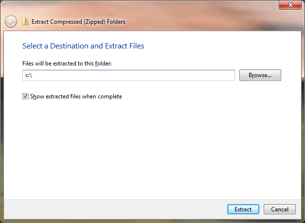
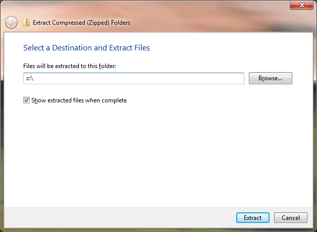
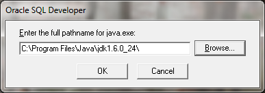
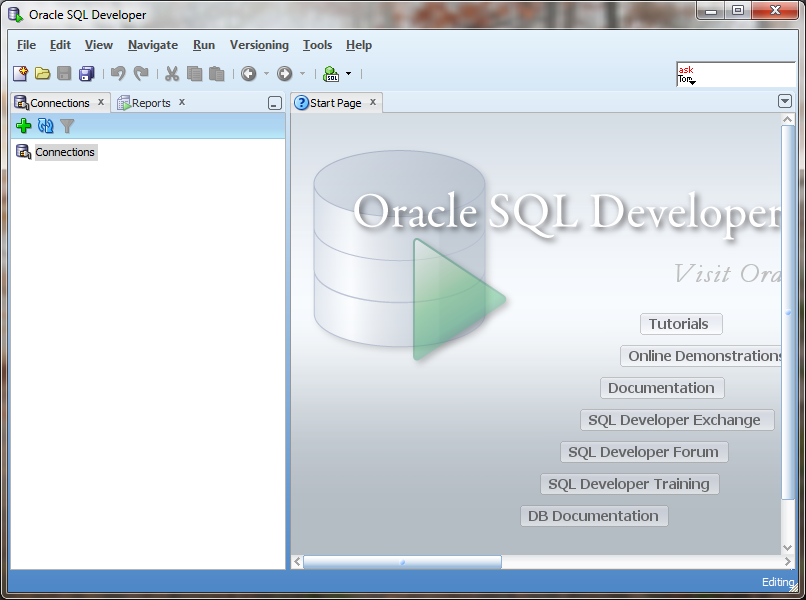
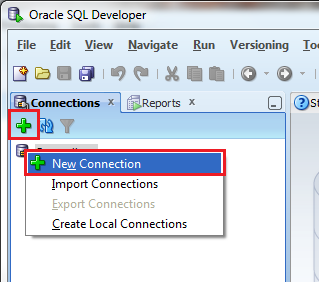
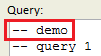
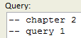
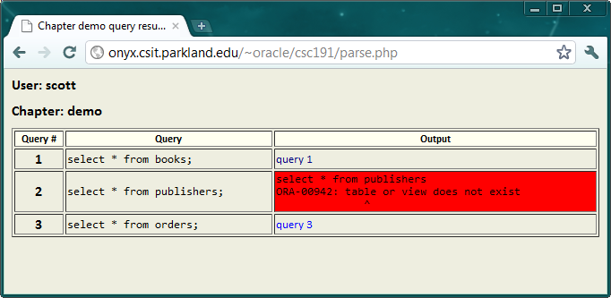

1. Install Java Development Kit (JDK)
If you do not have a Java SDK already (and you probably do not), you can download it:
http://www.oracle.com/technetwork/java/javase/downloads/index.html
Copy the location of the SDK and save it for later (in a few steps).
2. Install SQL Developer
Next, you can download SQL Developer: http://www.oracle.com/technetwork/developer-tools/sql-developer/downloads/index.html
[note: if you are unable to get the above link, I have mirrored it here ]
Select the version which corresponds to your operating system and does not contain java. For example, one of the following:
I extracted to c:\, but you can choose your favorite destination.

3. Configure SQL Developer
After the files have been extracted, the window containing the new folder will pop up. Open it and click on SQL Developer.exe. SQL Developer needs to configure a few items before we officially start to use it. The first box asks you to locate the Java SDK. If you copied the location from above, you can paste it here

After that, SQL Developer comes to life and you are presented with the "file association box". I usually elect to associate SQL Developer with all the files:

Finally, SQL Developer is up and running.

4. Connect to database
We will be connecting to a database hosted by Parkland.
| Connection Name | CSC191 | Note: Completely arbitrary, call it whatever you want |
| Username | same as parkland/angel | |
| Password | Username with "#" at the end | |
| Hostname | onyx.csit.parkland.edu | |
| Port | 35099 | |
| SID | CSC191 |
In the left-hand pane, either click on the green plus sign or right-click on the icon to the right of the word "Connections".

Enter the information from the above table into the "New / Select Database Connection" wizard, then click "Connect".

And Viola, you are now connected (provided no errors occurred)! There is an example of using SQL Developer in Appendix B of the book.
The Homework Checker does what it says it does; it checks homework. The goal of this little application is to give students immediate feedback. Please keep in mind that I strongly recommend that students start with SQL Developer, and then check homework as a last step - it is much cleaner than working on one question, submitting it, then working on the next question, submitting it, etc.
NOTE: It is built on PHP (which I am still learning).
The main screen has a login section, followed by three "action" sections; Checking homework, Resetting Tables and Viewing previously submitted homework. The login is the same used to connect to the database via SQL Developer, and it is used for each of the three sections.
2. Checking Homework
The "Query" textbox allows the student to enter in a group of queries to be executed against the database, and then checks them against a static answer.
The very first line denotes the chapter number. By default, the textbox shows "-- demo":

Two dashes ("--") denote a comment and are ignored when running sql. When you submit homework, you will put the chapter number first, like so:

The next line is "-- query 1". Please demark each individual query so that if I have a question when grading your homework, I can easily determine which question is which.
A special note when copy'n'pasting from another document. If you happen to copy from a Microsoft document (Word, notepad, wordpad, etc), watch out for "smart quotes", special quotation marks that have curly tips. If you paste these into the homework checker, they we not be interpretted as "normal" quotes and will cause an error.
Also, sometimes lines of text get squished together - make sure your queries are on seperate lines.
When you have entered all your queries into the textbox, hit "Check it!". The tables associated with the chapter will be reloaded and the queries will run. The result page will show a green background if your results match the answers, otherwise the background will be red and the appropriate error will be displayed.
Following is an example when running the "demo":

You can click on the "query" links in the Output column to see the results of the query:

As the semester progresses, the list of Chapters to reset to will grow larger. You will probably never need to reset your tables, as they are automatically reset each time you submit homework. But if you wish to reset your tables when working in SQL Developer, this is one quick easy way to do it.
4. Viewing previously submitted homework

Clicking on "View" will display everything you have submitted sorted by date in reverse order (most recent first, or LIFO). Thus by the end of the semester, your list of queries may be quite long.